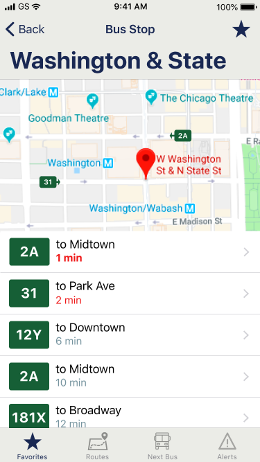

BusyBus

BusyBus is a mobile application operated by the local city transit system that serves thousands of commuters.
Due to expansion, numerous bus routes have been recently added and many of those routes stop at the same bus stop. Riders want to know what the next arriving bus is and how much time they have to get to the bus stop. They are currently complaining the most about the bus stop at Washington and State, which has seven bus lines serving the stop.
I was tasked with designing a transit app that would help riders see where their bus was and when it would arrive at their station.
Problem
- Too many buses at one stop
- Confusion about which bus is next
- No information about when the next bus will arrive
Solution
BusyBus displays the next bus and destination according to arrival time, as well as current bus locations